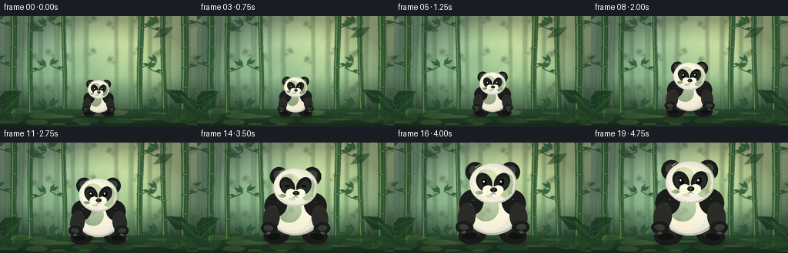
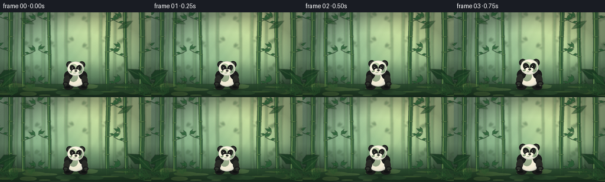
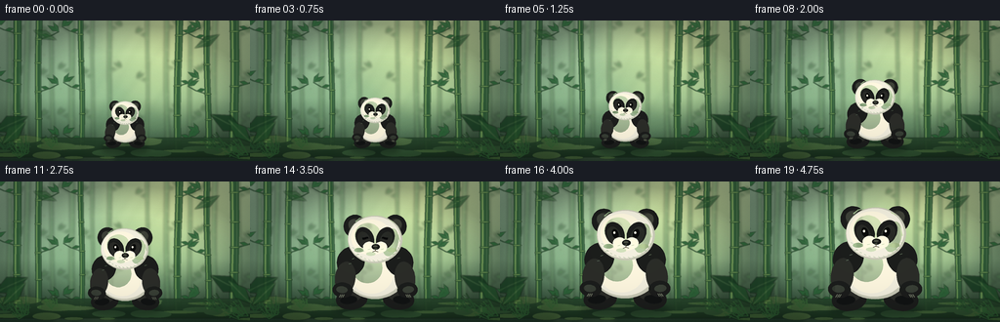
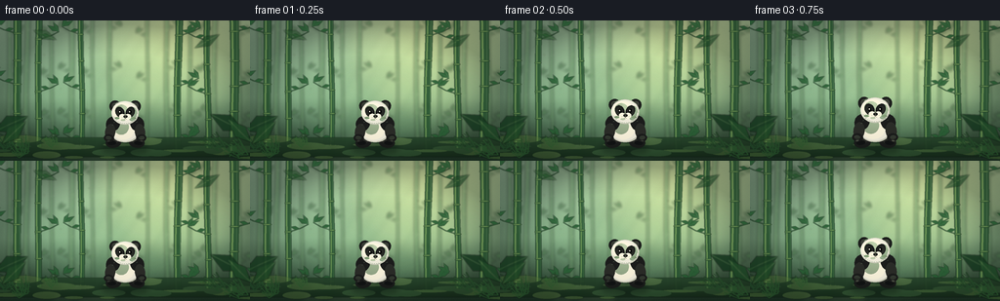

CODING AGENTS AS PIXEL WORLD MODELS
traex/DeepSeek-V4.1-Flash · instance_preservation_0045
点击播放 · 原生 RGB 像素
逐轮保存的候选
回放视频、检查图与代码变化。
每份候选均可单独播放。实际图片检查记录在下方工具轨迹中。
候选 01播放与检查图
点击播放 · 原生 RGB 像素


展开代码变化
--- 上一保存版本
+++ 本次保存版本
@@ -0,0 +1,565 @@
+from __future__ import annotations
+
+import math
+from pathlib import Path
+
+import numpy as np
+from PIL import Image, ImageDraw, ImageFilter
+
+import artifact_io
+
+
+WIDTH = 256
+HEIGHT = 144
+FRAMES = 20
+FPS = 4.0
+SUPERSAMPLE = 4
+SS = SUPERSAMPLE
+RNG = np.random.default_rng(2405)
+
+
+def rgba(color, alpha=255):
+ if len(color) == 4:
+ return color
+ return (*color, alpha)
+
+
+def smoothstep(value):
+ value = max(0.0, min(1.0, value))
+ return value * value * (3.0 - 2.0 * value)
+
+
+def logical_xy(x, y):
+ return round(x * SS), round(y * SS)
+
+
+def ellipse(draw, box, fill, outline=None, width=0):
+ draw.ellipse(
+ tuple(round(v * SS) for v in box),
+ fill=rgba(fill),
+ outline=rgba(outline) if outline else None,
+ width=max(1, round(width * SS)) if width else 0,
+ )
+
+
+def rounded_rect(draw, box, radius, fill, outline=None, width=0):
+ draw.rounded_rectangle(
+ tuple(round(v * SS) for v in box),
+ radius=round(radius * SS),
+ fill=rgba(fill),
+ outline=rgba(outline) if outline else None,
+ width=max(1, round(width * SS)) if width else 0,
+ )
+
+
+def polygon(draw, points, fill, outline=None, width=0):
+ pts = [(round(x * SS), round(y * SS)) for x, y in points]
+ draw.polygon(pts, fill=rgba(fill))
+ if outline:
+ draw.line(pts + [pts[0]], fill=rgba(outline), width=max(1, round(width * SS)))
+
+
+def line(draw, points, fill, width=1, joint="curve"):
+ pts = [(round(x * SS), round(y * SS)) for x, y in points]
+ draw.line(pts, fill=rgba(fill), width=max(1, round(width * SS)), joint=joint)
+
+
+def rotated_ellipse_points(x, y, rx, ry, angle=0.0, steps=52):
+ ca, sa = math.cos(angle), math.sin(angle)
+ points = []
+ for i in range(steps):
+ theta = math.tau * i / steps
+ px, py = rx * math.cos(theta), ry * math.sin(theta)
+ points.append((x + px * ca - py * sa, y + px * sa + py * ca))
+ return points
+
+
+def local_polygon(draw, cx, anchor, scale, points, fill, outline=None, width=0):
+ transformed = [(cx + x * scale, anchor + y * scale) for x, y in points]
+ polygon(draw, transformed, fill, outline, width * scale)
+
+
+def local_ellipse(
+ draw,
+ cx,
+ anchor,
+ scale,
+ x,
+ y,
+ rx,
+ ry,
+ fill,
+ angle=0.0,
+ outline=None,
+ width=0.0,
+):
+ points = rotated_ellipse_points(x, y, rx, ry, angle)
+ transformed = [(cx + px * scale, anchor + py * scale) for px, py in points]
+ polygon(draw, transformed, fill, outline, width * scale)
+
+
+def local_line(draw, cx, anchor, scale, points, fill, width):
+ transformed = [(cx + x * scale, anchor + y * scale) for x, y in points]
+ line(draw, transformed, fill, width * scale)
+
+
+def gradient_background():
+ y = np.linspace(0.0, 1.0, HEIGHT * SS, dtype=np.float32)[:, None]
+ x = np.linspace(0.0, 1.0, WIDTH * SS, dtype=np.float32)[None, :]
+
+ top = np.array([166, 202, 168], dtype=np.float32)
+ middle = np.array([118, 165, 125], dtype=np.float32)
+ bottom = np.array([39, 67, 48], dtype=np.float32)
+ blend = np.clip(y * 1.25, 0.0, 1.0)
+ low = top[None, None, :] * (1.0 - blend[:, :, None]) + middle[None, None, :] * blend[:, :, None]
+ deep = np.clip((y - 0.55) / 0.45, 0.0, 1.0)
+ color = low * (1.0 - deep[:, :, None]) + bottom[None, None, :] * deep[:, :, None]
+ color = np.broadcast_to(color, (HEIGHT * SS, WIDTH * SS, 3)).copy()
+
+ sunlight = np.exp(-((x - 0.72) / 0.34) ** 2) * np.exp(-((y - 0.12) / 0.48) ** 2)
+ color += sunlight[:, :, None] * np.array([52, 43, 14], dtype=np.float32)
+
+ vignette = np.clip(1.15 - 0.46 * ((x - 0.5) ** 2 + (y - 0.52) ** 2) * 4.0, 0.70, 1.0)
+ color *= vignette[:, :, None]
+ noise = RNG.normal(0.0, 2.0, (HEIGHT * SS, WIDTH * SS, 1)).astype(np.float32)
+ color = np.clip(color + noise, 0, 255).astype(np.uint8)
+ return Image.fromarray(color, "RGB").convert("RGBA")
+
+
+def leaf_points(base_x, base_y, length, width, angle, bend=0.12):
+ dx, dy = math.cos(angle), math.sin(angle)
+ nx, ny = -dy, dx
+ mid_x = base_x + dx * length * 0.48 - nx * width * bend
+ mid_y = base_y + dy * length * 0.48 - ny * width * bend
+ tip_x = base_x + dx * length
+ tip_y = base_y + dy * length
+ return [
+ (base_x, base_y),
+ (mid_x + nx * width, mid_y + ny * width),
+ (tip_x, tip_y),
+ (mid_x - nx * width * 0.82, mid_y - ny * width * 0.82),
+ ]
+
+
+def draw_leaf(draw, base_x, base_y, length, width, angle, fill, vein=None):
+ points = leaf_points(base_x, base_y, length, width, angle)
+ polygon(draw, points, fill)
+ if vein:
+ tip = points[2]
+ mid = ((points[1][0] + points[3][0]) * 0.5, (points[1][1] + points[3][1]) * 0.5)
+ line(draw, [(base_x, base_y), mid, tip], vein, 0.55)
+
+
+def draw_bamboo(
+ draw,
+ x,
+ width,
+ top,
+ bottom,
+ color,
+ highlight,
+ node_color,
+ lean=0.0,
+ node_gap=30.0,
+ phase=0.0,
+ leaf_color=None,
+ leaf_scale=1.0,
+):
+ steps = 16
+ left, right, centers = [], [], []
+ for i in range(steps + 1):
+ p = i / steps
+ y = top + (bottom - top) * p
+ center = x + lean * p + math.sin(p * 5.3 + phase) * 0.65
+ centers.append((center, y))
+ local_width = width * (1.0 - 0.10 * p)
+ left.append((center - local_width * 0.5, y))
+ right.append((center + local_width * 0.5, y))
+ polygon(draw, left + right[::-1], color)
+
+ shine_points = []
+ for center, y in centers:
+ shine_points.append((center - width * 0.22, y))
+ line(draw, shine_points, highlight, max(0.7, width * 0.18))
+ line(draw, [(x + width * 0.29, top), (x + width * 0.29 + lean, bottom)], (*color[:3], 120), max(0.45, width * 0.08))
+
+ y = top + 6 + node_gap * 0.55
+ node_index = 0
+ while y < bottom - 3:
+ p = (y - top) / max(1.0, bottom - top)
+ center = x + lean * p + math.sin(p * 5.3 + phase) * 0.65
+ ellipse(draw, (center - width * 0.56, y - 0.85, center + width * 0.56, y + 1.05), node_color)
+ ellipse(draw, (center - width * 0.48, y - 0.38, center + width * 0.47, y + 0.38), highlight)
+ if node_index % 2 == 0:
+ side = -1 if (node_index + int(phase * 5)) % 2 == 0 else 1
+ bx = center + side * width * 0.45
+ by = y - 0.5
+ branch_length = 14.0 * leaf_scale * (0.75 + width / 14.0)
+ ex = bx + side * branch_length
+ ey = by - 7.0 * leaf_scale
+ line(draw, [(bx, by), (bx + side * branch_length * 0.54, by - 3.0), (ex, ey)], color, max(0.8, width * 0.14))
+ if leaf_color:
+ draw_leaf(draw, ex, ey, 12.5 * leaf_scale, 2.5 * leaf_scale, -2.65 if side > 0 else -0.49, leaf_color, (*leaf_color[:3], 175))
+ draw_leaf(draw, ex, ey, 10.5 * leaf_scale, 2.1 * leaf_scale, -2.10 if side > 0 else -1.03, leaf_color, (*leaf_color[:3], 160))
+ draw_leaf(draw, bx + side * branch_length * 0.48, by - 2.7, 9.0 * leaf_scale, 1.9 * leaf_scale, -2.95 if side > 0 else -0.19, leaf_color, None)
+ node_index += 1
+ y += node_gap * (0.88 + 0.10 * math.sin(node_index * 2.2 + phase))
+
+
+def draw_fern(draw, x, y, scale, color, alpha=220):
+ c = (*color[:3], alpha)
+ for i in range(7):
+ angle = -2.92 + i * 0.285
+ length = (10.0 + (i % 3) * 2.4) * scale
+ ex = x + math.cos(angle) * length
+ ey = y + math.sin(angle) * length
+ line(draw, [(x, y), ((x + ex) * 0.52, (y + ey) * 0.52), (ex, ey)], c, 0.85 * scale)
+ for j in range(1, 5):
+ p = j / 5.0
+ lx = x + (ex - x) * p
+ ly = y + (ey - y) * p
+ side_angle = angle + (1.10 if j % 2 else -1.10)
+ ll = (3.8 - j * 0.35) * scale
+ line(draw, [(lx, ly), (lx + math.cos(side_angle) * ll, ly + math.sin(side_angle) * ll)], c, 0.55 * scale)
+
+
+def build_background():
+ base = gradient_background()
+
+ glow = Image.new("RGBA", base.size, (0, 0, 0, 0))
+ gd = ImageDraw.Draw(glow)
+ for radius, alpha in [(82, 18), (57, 22), (34, 30), (18, 42)]:
+ ellipse(gd, (183 - radius, 18 - radius, 183 + radius, 18 + radius), (240, 224, 152, alpha))
+ glow = glow.filter(ImageFilter.GaussianBlur(7 * SS))
+ base = Image.alpha_composite(base, glow)
+
+ haze = Image.new("RGBA", base.size, (0, 0, 0, 0))
+ hd = ImageDraw.Draw(haze)
+ hd.polygon(
+ [
+ logical_xy(194, -10),
+ logical_xy(224, -10),
+ logical_xy(112, 151),
+ logical_xy(72, 151),
+ ],
+ fill=(221, 232, 171, 16),
+ )
+ hd.polygon(
+ [
+ logical_xy(148, -8),
+ logical_xy(160, -8),
+ logical_xy(72, 148),
+ logical_xy(49, 148),
+ ],
+ fill=(222, 236, 180, 12),
+ )
+ haze = haze.filter(ImageFilter.GaussianBlur(3.0 * SS))
+ base = Image.alpha_composite(base, haze)
+
+ far = Image.new("RGBA", base.size, (0, 0, 0, 0))
+ fd = ImageDraw.Draw(far)
+ far_stalks = [
+ (9, 4.3, -4, 128, 0.8, 0.2),
+ (28, 5.2, -10, 124, -1.2, 1.2),
+ (53, 3.4, -3, 126, 0.5, 2.8),
+ (73, 5.4, -8, 127, 1.0, 0.4),
+ (95, 3.0, -5, 126, -0.5, 3.6),
+ (112, 4.2, -9, 127, 0.9, 2.2),
+ (151, 3.3, -2, 124, -0.6, 4.8),
+ (170, 4.7, -10, 128, 1.3, 1.8),
+ (194, 3.7, -5, 125, 0.7, 0.6),
+ (220, 5.1, -8, 127, -1.1, 2.5),
+ (244, 4.0, -3, 126, 0.8, 4.2),
+ ]
+ for x, width, top, bottom, lean, phase in far_stalks:
+ draw_bamboo(
+ fd,
+ x,
+ width,
+ top,
+ bottom,
+ (73, 117, 77, 112),
+ (134, 170, 113, 95),
+ (56, 91, 61, 92),
+ lean=lean,
+ node_gap=25,
+ phase=phase,
+ leaf_color=(66, 112, 66, 120),
+ leaf_scale=0.72,
+ )
+ far = far.filter(ImageFilter.GaussianBlur(1.25 * SS))
+ base = Image.alpha_composite(base, far)
+
+ fog = Image.new("RGBA", base.size, (0, 0, 0, 0))
+ fogd = ImageDraw.Draw(fog)
+ ellipse(fogd, (-35, 51, 291, 134), (171, 195, 149, 20))
+ fog = fog.filter(ImageFilter.GaussianBlur(13 * SS))
+ base = Image.alpha_composite(base, fog)
+
+ mid = Image.new("RGBA", base.size, (0, 0, 0, 0))
+ md = ImageDraw.Draw(mid)
+ mid_stalks = [
+ (17, 8.0, -10, 132, 1.4, 0.8),
+ (40, 6.4, -4, 130, -1.0, 2.7),
+ (83, 5.5, -9, 128, 0.8, 4.1),
+ (183, 7.4, -8, 132, -1.5, 1.4),
+ (212, 6.3, -3, 131, 1.1, 3.2),
+ (240, 9.1, -12, 134, -0.7, 5.4),
+ ]
+ for x, width, top, bottom, lean, phase in mid_stalks:
+ draw_bamboo(
+ md,
+ x,
+ width,
+ top,
+ bottom,
+ (43, 86, 50, 236),
+ (115, 154, 85, 225),
+ (32, 67, 39, 242),
+ lean=lean,
+ node_gap=31,
+ phase=phase,
+ leaf_color=(41, 94, 51, 232),
+ leaf_scale=1.05,
+ )
+ mid = mid.filter(ImageFilter.GaussianBlur(0.34 * SS))
+ base = Image.alpha_composite(base, mid)
+
+ ground = Image.new("RGBA", base.size, (0, 0, 0, 0))
+ gd = ImageDraw.Draw(ground)
+ for i in range(24):
+ y = 122.0 + i * 0.83
+ shade = 0.0 + i / 23.0
+ color = (
+ int(44 - shade * 16),
+ int(77 - shade * 25),
+ int(47 - shade * 16),
+ 230,
+ )
+ line(gd, [(-4, y), (260, y)], color, 1.35)
+
+ moss_colors = [(71, 106, 52, 150), (88, 121, 58, 105), (47, 82, 45, 160)]
+ for i in range(26):
+ x = float(RNG.uniform(-5, 261))
+ y = float(RNG.uniform(123, 142))
+ rx = float(RNG.uniform(5, 21))
+ ry = float(RNG.uniform(1.0, 3.8))
+ ellipse(gd, (x - rx, y - ry, x + rx, y + ry), moss_colors[i % len(moss_colors)])
+
+ for x, y, s, color in [
+ (10, 129, 1.1, (35, 77, 41)),
+ (25, 137, 1.35, (42, 87, 44)),
+ (55, 127, 0.85, (52, 97, 48)),
+ (220, 130, 1.05, (38, 79, 41)),
+ (242, 138, 1.25, (43, 88, 45)),
+ ]:
+ draw_fern(gd, x, y, s, color, 205)
+ ground = ground.filter(ImageFilter.GaussianBlur(0.26 * SS))
+ base = Image.alpha_composite(base, ground)
+ return base
+
+
+def panda_shadow(frame_index):
+ layer = Image.new("RGBA", (WIDTH * SS, HEIGHT * SS), (0, 0, 0, 0))
+ draw = ImageDraw.Draw(layer)
+ t = frame_index / (FRAMES - 1)
+ growth = smoothstep(t)
+ scale = 0.42 + 0.56 * growth
+ width = 39 * scale + 8
+ ellipse(draw, (128 - width, 127.0, 128 + width, 137.0), (21, 36, 25, 110))
+ ellipse(draw, (128 - width * 0.60, 128.0, 128 + width * 0.60, 134.0), (15, 26, 19, 75))
+ layer = layer.filter(ImageFilter.GaussianBlur(3.0 * SS))
+ return layer
+
+
+def draw_panda(base, frame_index):
+ t = frame_index / (FRAMES - 1)
+ growth = smoothstep(t)
+ adult_height = 108.0
+ panda_height = 47.0 + (adult_height - 47.0) * growth
+ scale = panda_height / adult_height
+ cx = 128.0
+ anchor = 131.0 + 1.2 * growth
+ bob = 0.65 * math.sin(math.tau * t * 2.2) * (0.25 + growth)
+ head_turn = 1.1 * math.sin(math.tau * t * 1.35) * growth
+
+ shadow = panda_shadow(frame_index)
+ base.alpha_composite(shadow)
+
+ panda = Image.new("RGBA", base.size, (0, 0, 0, 0))
+ d = ImageDraw.Draw(panda)
+
+ ink = (28, 29, 27, 255)
+ ink_soft = (43, 44, 39, 255)
+ ink_light = (65, 65, 58, 255)
+ fur = (235, 232, 217, 255)
+ fur_warm = (246, 240, 218, 255)
+ fur_shadow = (194, 195, 178, 255)
+ fur_deep = (164, 169, 155, 255)
+ cream = (250, 244, 220, 255)
+
+ # Rear legs and feet form a stable seated base.
+ local_ellipse(d, cx, anchor, scale, -27.5, -11.0 + bob, 18.5, 12.0, ink, -0.10)
+ local_ellipse(d, cx, anchor, scale, 27.5, -11.0 + bob, 18.5, 12.0, ink, 0.10)
+ local_ellipse(d, cx, anchor, scale, -28.0, -14.8 + bob, 12.7, 6.3, ink_soft, -0.12)
+ local_ellipse(d, cx, anchor, scale, 28.0, -14.8 + bob, 12.7, 6.3, ink_soft, 0.12)
+ local_ellipse(d, cx, anchor, scale, -31.0, -10.4 + bob, 10.0, 4.8, (18, 20, 19, 255), -0.10)
+ local_ellipse(d, cx, anchor, scale, 31.0, -10.4 + bob, 10.0, 4.8, (18, 20, 19, 255), 0.10)
+
+ # Pear-shaped torso, with a warm white center and cool gray rim.
+ local_ellipse(d, cx, anchor, scale, 0, -42.5 + bob, 37.0, 31.0, fur_shadow)
+ local_ellipse(d, cx, anchor, scale, -1.2, -43.5 + bob, 34.5, 29.2, fur)
+ local_ellipse(d, cx, anchor, scale, -4.0, -43.0 + bob, 26.0, 25.2, fur_warm)
+ local_ellipse(d, cx, anchor, scale, -9.0, -48.0 + bob, 17.5, 18.0, (246, 238, 211, 90))
+
+ # Black shoulder band and forearms.
+ local_ellipse(d, cx, anchor, scale, -28.5, -55.5 + bob, 16.0, 18.0, ink, 0.46)
+ local_ellipse(d, cx, anchor, scale, 28.5, -55.5 + bob, 16.0, 18.0, ink, -0.46)
+ local_ellipse(d, cx, anchor, scale, -35.0, -36.5 + bob, 12.0, 19.0, ink_soft, 0.12)
+ local_ellipse(d, cx, anchor, scale, 35.0, -36.5 + bob, 12.0, 19.0, ink_soft, -0.12)
+ local_ellipse(d, cx, anchor, scale, -38.0, -22.0 + bob, 12.0, 9.0, ink, 0.10)
+ local_ellipse(d, cx, anchor, scale, 38.0, -22.0 + bob, 12.0, 9.0, ink, -0.10)
+ local_ellipse(d, cx, anchor, scale, -39.0, -22.5 + bob, 6.7, 4.0, (49, 49, 44, 210), 0.1)
+ local_ellipse(d, cx, anchor, scale, 39.0, -22.5 + bob, 6.7, 4.0, (49, 49, 44, 210), -0.1)
+
+ # Claws remain subtle at the small scale but read clearly when grown.
+ for side in (-1, 1):
+ for i in range(3):
+ lx = side * (36.0 + i * 2.0)
+ local_line(d, cx, anchor, scale, [(lx, -16.8 + bob), (lx + side * 2.1, -13.7 + bob)], (118, 116, 102, 190), 0.8)
+
+ # Ears, head, and cheek silhouette.
+ local_ellipse(d, cx, anchor, scale, -23.5 + head_turn * 0.2, -96.8 + bob, 13.4, 13.8, ink, -0.18)
+ local_ellipse(d, cx, anchor, scale, 23.5 + head_turn * 0.2, -96.8 + bob, 13.4, 13.8, ink, 0.18)
+ local_ellipse(d, cx, anchor, scale, -23.0 + head_turn * 0.2, -97.4 + bob, 8.3, 8.9, ink_soft, -0.18)
+ local_ellipse(d, cx, anchor, scale, 23.0 + head_turn * 0.2, -97.4 + bob, 8.3, 8.9, ink_soft, 0.18)
+ local_ellipse(d, cx, anchor, scale, -25.5 + head_turn * 0.2, -99.2 + bob, 5.8, 6.0, (50, 50, 45, 230), -0.18)
+ local_ellipse(d, cx, anchor, scale, 25.5 + head_turn * 0.2, -99.2 + bob, 5.8, 6.0, (50, 50, 45, 230), 0.18)
+
+ head_x = head_turn
+ local_ellipse(d, cx, anchor, scale, head_x, -81.5 + bob, 32.0, 28.0, fur_shadow)
+ local_ellipse(d, cx, anchor, scale, head_x - 0.8, -82.0 + bob, 30.5, 26.4, fur)
+ local_ellipse(d, cx, anchor, scale, head_x - 4.5, -84.0 + bob, 23.5, 21.0, fur_warm)
+ local_ellipse(d, cx, anchor, scale, head_x - 8.5, -86.5 + bob, 15.2, 14.4, (249, 241, 216, 105))
+ local_ellipse(d, cx, anchor, scale, head_x + 18.0, -78.0 + bob, 9.0, 16.5, (193, 194, 178, 95), 0.22)
+
+ # Eye patches are angled, with a rounded lower cheek.
+ eye_shift = head_turn * 0.85
+ local_ellipse(d, cx, anchor, scale, -12.0 + eye_shift, -83.0 + bob, 10.2, 13.4, ink, -0.46)
+ local_ellipse(d, cx, anchor, scale, 12.0 + eye_shift, -83.0 + bob, 10.2, 13.4, ink, 0.46)
+ local_ellipse(d, cx, anchor, scale, -13.0 + eye_shift, -81.0 + bob, 7.0, 10.1, (36, 36, 33, 245), -0.42)
+ local_ellipse(d, cx, anchor, scale, 13.0 + eye_shift, -81.0 + bob, 7.0, 10.1, (36, 36, 33, 245), 0.42)
+
+ # Blink only once, late enough to preserve the direct gaze during growth.
+ blink = 1.0 - smoothstep(abs(frame_index - 14) / 1.2)
+ eye_ry = 1.1 + 4.2 * (1.0 - blink)
+ local_ellipse(d, cx, anchor, scale, -11.5 + eye_shift, -82.8 + bob, 3.4, eye_ry, (9, 10, 9, 255), -0.35)
+ local_ellipse(d, cx, anchor, scale, 11.5 + eye_shift, -82.8 + bob, 3.4, eye_ry, (9, 10, 9, 255), 0.35)
+ if blink < 0.75:
+ local_ellipse(d, cx, anchor, scale, -12.5 + eye_shift, -84.0 + bob, 1.15, 1.35, (245, 242, 221, 245))
+ local_ellipse(d, cx, anchor, scale, 10.5 + eye_shift, -84.0 + bob, 1.15, 1.35, (245, 242, 221, 245))
+ local_ellipse(d, cx, anchor, scale, -12.8 + eye_shift, -83.6 + bob, 0.55, 0.62, (255, 255, 244, 250))
+ local_ellipse(d, cx, anchor, scale, 10.2 + eye_shift, -83.6 + bob, 0.55, 0.62, (255, 255, 244, 250))
+ else:
+ local_line(d, cx, anchor, scale, [(-15 + eye_shift, -82.8 + bob), (-8 + eye_shift, -83.2 + bob)], (8, 9, 8, 255), 1.3)
+ local_line(d, cx, anchor, scale, [(8 + eye_shift, -83.2 + bob), (15 + eye_shift, -82.8 + bob)], (8, 9, 8, 255), 1.3)
+
+ # Muzzle, nose, and a restrained mouth line.
+ local_ellipse(d, cx, anchor, scale, -6.8 + eye_shift, -72.5 + bob, 7.3, 6.4, cream)
+ local_ellipse(d, cx, anchor, scale, 6.8 + eye_shift, -72.5 + bob, 7.3, 6.4, cream)
+ local_ellipse(d, cx, anchor, scale, 0.8 + eye_shift, -72.8 + bob, 4.7, 3.2, (22, 23, 21, 255))
+ local_ellipse(d, cx, anchor, scale, 0.3 + eye_shift, -73.5 + bob, 2.5, 1.15, (55, 53, 47, 220))
+ local_line(d, cx, anchor, scale, [(0.5 + eye_shift, -69.9 + bob), (0.1 + eye_shift, -67.8 + bob)], (57, 49, 41, 235), 0.9)
+ local_line(d, cx, anchor, scale, [(0.1 + eye_shift, -68.0 + bob), (-3.2 + eye_shift, -66.7 + bob)], (57, 49, 41, 220), 0.75)
+ local_line(d, cx, anchor, scale, [(0.1 + eye_shift, -68.0 + bob), (3.4 + eye_shift, -66.8 + bob)], (57, 49, 41, 220), 0.75)
+
+ # Soft cheek color and tiny chin highlight make the face feel alive.
+ local_ellipse(d, cx, anchor, scale, -19.0 + eye_shift, -69.0 + bob, 5.3, 2.5, (211, 162, 133, 30))
+ local_ellipse(d, cx, anchor, scale, 20.0 + eye_shift, -69.0 + bob, 5.3, 2.5, (211, 162, 133, 30))
+ local_ellipse(d, cx, anchor, scale, -5.0 + eye_shift, -64.5 + bob, 5.4, 2.2, (250, 243, 220, 130))
+
+ # A few directional fur strokes create texture without changing the silhouette.
+ fur_alpha = int(35 + 25 * growth)
+ for i in range(14):
+ theta = math.pi * 0.13 + i * math.pi * 0.057
+ x0 = head_x + 29.0 * math.cos(theta)
+ y0 = -82.0 + 25.0 * math.sin(theta) + bob
+ local_line(d, cx, anchor, scale, [(x0, y0), (x0 + 2.0, y0 + 1.0)], (145, 150, 137, fur_alpha), 0.55)
+ for i in range(10):
+ theta = math.pi * 1.12 + i * math.pi * 0.075
+ x0 = 33.0 * math.cos(theta)
+ y0 = -42.5 + 28.0 * math.sin(theta) + bob
+ local_line(d, cx, anchor, scale, [(x0, y0), (x0 + 2.5, y0 - 0.7)], (126, 135, 122, fur_alpha), 0.55)
+
+ # Gentle rim light separates the dark markings from the forest.
+ local_line(d, cx, anchor, scale, [(-23, -102.5 + bob), (-18, -106.5 + bob), (-12, -108.0 + bob)], (146, 164, 130, 82), 1.2)
+ local_line(d, cx, anchor, scale, [(17, -104.0 + bob), (22, -101.5 + bob)], (170, 184, 149, 78), 1.0)
+ local_line(d, cx, anchor, scale, [(22, -92.5 + bob), (27, -87.0 + bob), (29, -79.0 + bob)], (241, 238, 214, 92), 1.2)
+
+ base.alpha_composite(panda)
+
+
+def draw_foreground(base):
+ fg = Image.new("RGBA", base.size, (0, 0, 0, 0))
+ d = ImageDraw.Draw(fg)
+
+ # Large, softly defocused leaves frame the scene without covering the panda.
+ leaves = [
+ (-6, 114, 38, 10, -0.43, (27, 63, 35, 225)),
+ (2, 127, 34, 8, -0.77, (33, 75, 39, 220)),
+ (249, 113, 38, 10, -2.68, (25, 59, 33, 230)),
+ (257, 125, 32, 8, -2.35, (33, 76, 40, 220)),
+ (225, 14, 30, 6, 2.64, (32, 74, 39, 165)),
+ (34, 10, 26, 5.5, 0.39, (43, 85, 46, 150)),
+ ]
+ for x, y, length, width, angle, color in leaves:
+ draw_leaf(d, x, y, length, width, angle, color, (94, 128, 77, color[3] // 2))
+ fg = fg.filter(ImageFilter.GaussianBlur(0.55 * SS))
+ base.alpha_composite(fg)
+
+ particles = Image.new("RGBA", base.size, (0, 0, 0, 0))
+ pd = ImageDraw.Draw(particles)
+ motes = [
+ (45, 35, 0.75, 60),
+ (62, 70, 0.45, 44),
+ (91, 28, 0.55, 52),
+ (172, 41, 0.65, 66),
+ (202, 63, 0.45, 45),
+ (215, 92, 0.55, 38),
+ (154, 112, 0.40, 30),
+ ]
+ for x, y, radius, alpha in motes:
+ ellipse(pd, (x - radius, y - radius, x + radius, y + radius), (237, 231, 166, alpha))
+ particles = particles.filter(ImageFilter.GaussianBlur(0.65 * SS))
+ base.alpha_composite(particles)
+
+
+def render_frame(frame_index, background):
+ frame = background.copy()
+ draw_panda(frame, frame_index)
+ draw_foreground(frame)
+
+ # Final grade: warm highlights, slightly lifted greens, and a subtle vignette.
+ array = np.asarray(frame.convert("RGB"), dtype=np.float32)
+ luminance = array.mean(axis=2, keepdims=True)
+ array += np.clip((luminance - 125.0) / 255.0, -0.12, 0.18) * np.array([8.0, 5.0, -1.5])
+ y = np.linspace(-1.0, 1.0, array.shape[0], dtype=np.float32)[:, None]
+ x = np.linspace(-1.0, 1.0, array.shape[1], dtype=np.float32)[None, :]
+ vignette = np.clip(1.03 - 0.12 * (x * x + y * y), 0.86, 1.03)
+ array *= vignette[:, :, None]
+ array = np.clip(array, 0, 255).astype(np.uint8)
+ image = Image.fromarray(array, "RGB")
+ image = image.resize((WIDTH, HEIGHT), Image.Resampling.LANCZOS)
+ return np.asarray(image, dtype=np.uint8)
+
+
+def main():
+ case_dir = Path(__file__).resolve().parent
+ background = build_background()
+ frames = np.stack([render_frame(i, background) for i in range(FRAMES)], axis=0)
+ artifact_io.save(frames, case_dir)
+ print(f"saved {len(frames)} frames at {WIDTH}x{HEIGHT}, {FPS:g} fps to {case_dir}")
+
+
+if __name__ == "__main__":
+ main()
候选 02播放与检查图
点击播放 · 原生 RGB 像素


展开代码变化
--- 上一保存版本
+++ 本次保存版本
@@ -328,20 +328,20 @@
ground = Image.new("RGBA", base.size, (0, 0, 0, 0))
gd = ImageDraw.Draw(ground)
for i in range(24):
- y = 122.0 + i * 0.83
+ y = 120.5 + i * 0.83
shade = 0.0 + i / 23.0
color = (
- int(44 - shade * 16),
- int(77 - shade * 25),
- int(47 - shade * 16),
- 230,
+ int(39 - shade * 15),
+ int(69 - shade * 24),
+ int(42 - shade * 15),
+ 235,
)
line(gd, [(-4, y), (260, y)], color, 1.35)
moss_colors = [(71, 106, 52, 150), (88, 121, 58, 105), (47, 82, 45, 160)]
for i in range(26):
x = float(RNG.uniform(-5, 261))
- y = float(RNG.uniform(123, 142))
+ y = float(RNG.uniform(121, 142))
rx = float(RNG.uniform(5, 21))
ry = float(RNG.uniform(1.0, 3.8))
ellipse(gd, (x - rx, y - ry, x + rx, y + ry), moss_colors[i % len(moss_colors)])
@@ -366,8 +366,8 @@
growth = smoothstep(t)
scale = 0.42 + 0.56 * growth
width = 39 * scale + 8
- ellipse(draw, (128 - width, 127.0, 128 + width, 137.0), (21, 36, 25, 110))
- ellipse(draw, (128 - width * 0.60, 128.0, 128 + width * 0.60, 134.0), (15, 26, 19, 75))
+ ellipse(draw, (128 - width, 126.0, 128 + width, 136.0), (16, 30, 21, 118))
+ ellipse(draw, (128 - width * 0.60, 127.0, 128 + width * 0.60, 133.0), (12, 22, 16, 82))
layer = layer.filter(ImageFilter.GaussianBlur(3.0 * SS))
return layer
@@ -375,11 +375,11 @@
def draw_panda(base, frame_index):
t = frame_index / (FRAMES - 1)
growth = smoothstep(t)
- adult_height = 108.0
- panda_height = 47.0 + (adult_height - 47.0) * growth
- scale = panda_height / adult_height
+ reference_height = 108.0
+ panda_height = 47.0 + (104.0 - 47.0) * growth
+ scale = panda_height / reference_height
cx = 128.0
- anchor = 131.0 + 1.2 * growth
+ anchor = 130.2 + 0.7 * growth
bob = 0.65 * math.sin(math.tau * t * 2.2) * (0.25 + growth)
head_turn = 1.1 * math.sin(math.tau * t * 1.35) * growth
可观测工具轨迹
实际执行的命令与返回图片。
命令 1exit 0
/bin/bash -c "pwd && rg --files -g '"'!*__pycache__*'"' -g '"'!*.pyc'"' | sed -n '1,200p'"
命令 2exit 0
/bin/bash -c 'cat prompt.txt'
命令 3exit 0
/bin/bash -c 'cat GENERATION_RULES.md'
命令 4exit 0
/bin/bash -c 'cat task_spec.json'
命令 5exit 0
/bin/bash -c "find . -maxdepth 3 -type f -printf '%p %s bytes\\n' | sort | sed -n '1,240p'"
命令 6exit 0
/bin/bash -c "sed -n '1,260p' artifact_io.py"
命令 7exit 0
/bin/bash -c "sed -n '1,260p' player_template.html"
命令 8exit 0
/bin/bash -c "python - <<'PY' import importlib.util for m in ['PIL','numpy','imageio','cv2']: print(m, bool(importlib.util.find_spec(m))) PY ffmpeg -version | head -n 2"
命令 9exit 1
/bin/bash -c 'python generate.py'
命令 10exit 0
/bin/bash -c 'python generate.py'
命令 11exit 0
/bin/bash -c "find . -maxdepth 2 -type f -printf '%p %s bytes\\n' | sort"
命令 12exit 0
/bin/bash -c 'command -v chafa || true; command -v viu || true; command -v jp2 || true; command -v img2txt || true; command -v convert || true; command -v magick || true'
命令 13exit 0
/bin/bash -c "python - <<'PY'
from PIL import Image
import numpy as np
for i in [0,5,10,15,19]:
a=np.asarray(Image.open(f'frames/{i:02d}.png'))
print(i, 'mean',a.mean((0,1)).round(1), 'min/max',a.min(),a.max())
# quantify center-region change and panda-like white/black extents
for i in [0,5,10,15,19]:
a=np.asarray(Image.open(f'frames/{i:02d}.png')).astype(int)
# center 90 px, brightness/saturation simple silhouette evidence
c=a[:,70:186]
print('center',i,'std',round(c.std(),1),'dark%',round(((c.mean(2)<70)).mean()*100,1),'light%',round(((c.mean(2)>180)).mean()*100,1))
PY"命令 14exit 0
/bin/bash -c "python - <<'PY'
from PIL import Image
import numpy as np
for fi in [0,9,19]:
im=Image.open(f'frames/{fi:02d}.png').convert('RGB').crop((64,10,192,144))
a=np.asarray(im).astype(float)
lum=a.mean(2); sat=a.max(2)-a.min(2)
# grayscale-ish pixels = panda or sky; show dark panda as #, white panda as @, edges as +, rest dots
m=np.zeros(lum.shape, dtype='U1'); m[:]=' '
m[(sat<24)&(lum<85)]='#'
m[(sat<25)&(lum>150)]='@'
m[(sat<18)&(lum>=85)&(lum<=150)]='o'
# downsample 2x2 using priority
out=[]
for y in range(0,lum.shape[0],2):
row=''
for x in range(0,lum.shape[1],2):
blk=m[y:y+2,x:x+2].ravel()
if '#' in blk: row+='#'
elif '@' in blk: row+='@'
elif 'o' in blk: row+='o'
else: row+=' '
out.append(row.rstrip())
print('\\nFRAME',fi)
print('\\n'.join(out))
PY"命令 15exit 0
/bin/bash -c "python - <<'PY'
from PIL import Image
import numpy as np
for fi in [0,9,19]:
a=np.asarray(Image.open(f'frames/{fi:02d}.png'))
print('\\n',fi)
for x,y in [(128,50),(128,65),(128,80),(128,90),(128,105),(128,120),(100,75),(156,75),(110,45),(146,45),(128,134),(40,80),(180,80)]:
print((x,y),a[y,x].tolist(),end='; ')
print()
PY"命令 16exit 0
/bin/bash -c "rg -n \"for i in range\\(24\\)|moss_colors|panda_shadow|adult_height|anchor =\" generate.py"
命令 17exit 0
/bin/bash -c "sed -n '300,370p' generate.py"
命令 18exit 0
/bin/bash -c "sed -n '370,425p' generate.py"
命令 19exit 0
/bin/bash -c 'python generate.py'
命令 20exit 0
/bin/bash -c "python - <<'PY'
from PIL import Image
import numpy as np
# Verify exact task contract and frame-to-frame continuity.
spec={'n':20,'h':144,'w':256}
z=np.load('pixels.npz')['pixels']
print('pixels.npz:', z.shape, z.dtype, int(z.min()), int(z.max()))
print('index.html:', len(open('index.html','rb').read()), 'bytes; ready marker:', 'window.__pixelReady=true' in open('index.html').read())
imgs=[np.asarray(Image.open(f'frames/{i:02d}.png')) for i in range(20)]
print('frames:', len(imgs), 'shape:', imgs[0].shape, 'dtype:', imgs[0].dtype)
diffs=[np.abs(imgs[i].astype(np.int16)-imgs[i-1].astype(np.int16)).mean() for i in range(1,20)]
print('mean adjacent frame delta: min %.2f max %.2f avg %.2f' % (min(diffs),max(diffs),sum(diffs)/len(diffs)))
for i in [0,5,10,15,19]:
a=imgs[i].astype(int); c=a[:,70:186]
print(f'frame {i:02d}: dark={((c.mean(2)<70).mean()*100):.1f}% light={((c.mean(2)>180).mean()*100):.1f}%')
PY"命令 21exit 0
/bin/bash -c "python - <<'PY'
from PIL import Image
import numpy as np
for fi in [0,9,19]:
a=np.asarray(Image.open(f'frames/{fi:02d}.png')).astype(float)
lum=a.mean(2); sat=a.max(2)-a.min(2)
m=np.zeros(lum.shape, dtype='U1'); m[:]=' '
m[(sat<24)&(lum<75)]='#'
m[(sat<25)&(lum>150)]='@'
out=[]
for y in range(0,144,2):
row=''
for x in range(64,192,2):
blk=m[y:y+2,x:x+2].ravel()
row += '#' if '#' in blk else ('@' if '@' in blk else ' ')
out.append(row.rstrip())
print('\\nFRAME',fi)
print('\\n'.join(out))
PY"命令 22exit 0
/bin/bash -c "python - <<'PY'
from PIL import Image
import numpy as np, json, hashlib
z=np.load('pixels.npz')['pixels']
frames=[]
for i in range(20):
frames.append(np.asarray(Image.open(f'frames/{i:02d}.png')))
frames=np.stack(frames)
reconstructed=np.stack([((z[:,:,i]>>16)&255).astype(np.uint8) for i in range(20)],axis=0).transpose(0,1,2)
# last expression is RGB-indexed differently; compare channelwise directly
r=((z>>16)&255).astype(np.uint8).transpose(2,0,1)
g=((z>>8)&255).astype(np.uint8).transpose(2,0,1)
b=(z&255).astype(np.uint8).transpose(2,0,1)
packed=np.stack([r,g,b],axis=-1)
print('packed tensor matches PNG frames:', bool(np.array_equal(frames,packed)))
print('all frame sizes:', sorted(set(Image.open(f'frames/{i:02d}.png').size for i in range(20))))
print('fps/frames:', json.load(open('task_spec.json'))['fps'], '/', len(frames))
print('sha256 pixels.npz:', hashlib.sha256(open('pixels.npz','rb').read()).hexdigest())
PY"命令 23exit 1
/bin/bash -c "python - <<'PY'
from pathlib import Path
import hashlib
p=Path('pixels.npz')
before=hashlib.sha256(p.read_bytes()).hexdigest()
PY
python generate.py >/tmp/pixelworld_generate_check.log 2>&1
python - <<'PY'
from pathlib import Path
import hashlib
print(hashlib.sha256(Path('pixels.npz').read_bytes()).hexdigest())
print(Path('/tmp/pixelworld_generate_check.log').read_text().strip().splitlines()[-1])
PY"命令 24exit 0
/bin/bash -c 'python generate.py'
命令 25exit 0
/bin/bash -c 'sha256sum pixels.npz index.html inspection.png transition_check.png; git status --short 2>/dev/null || true'
保存候选 2 份；完成命令 25 次；可验证图片返回 0 张。原始 API 响应与完整日志保留在本地。